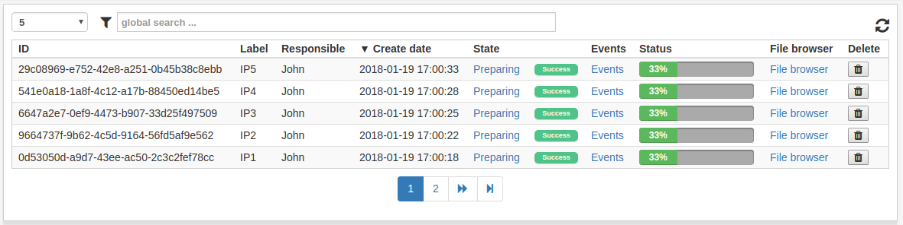
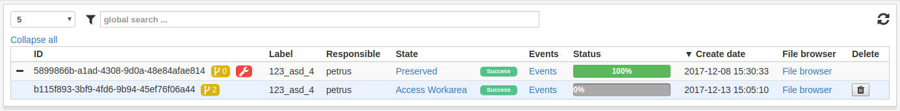
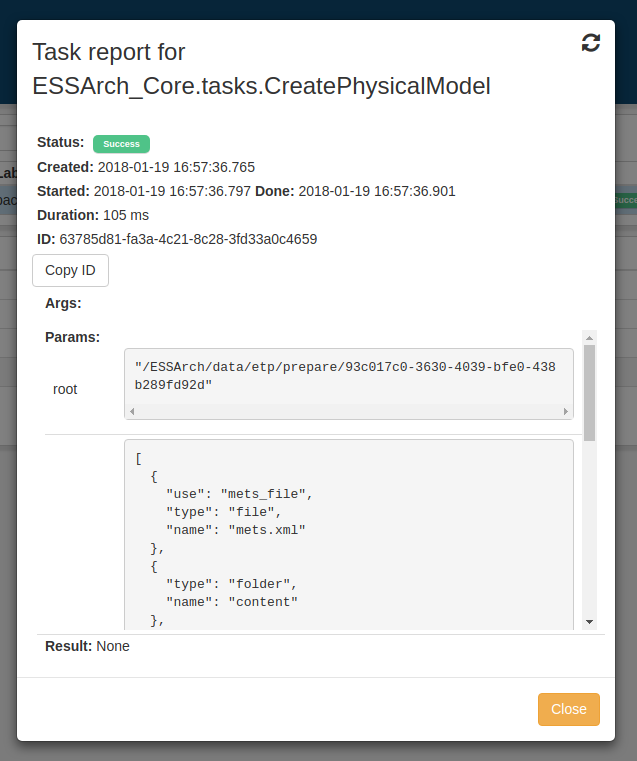
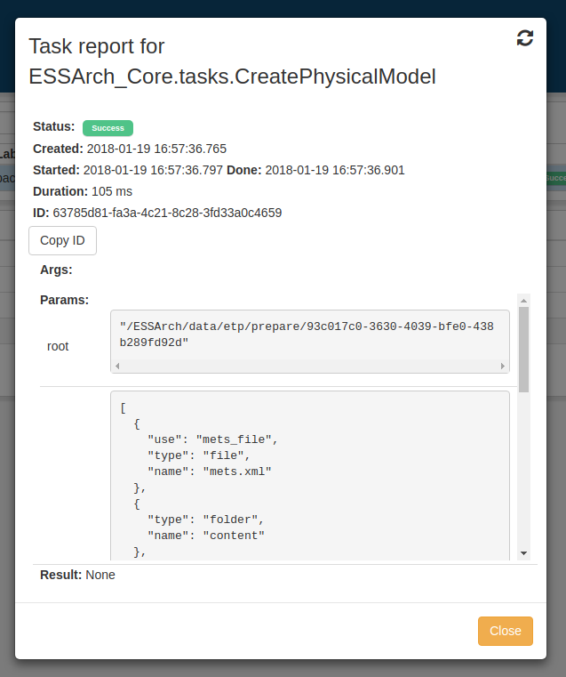

Interface¶
List view¶
The list view is the table of objects that is present in most views in ESSArch. The objects listed in this view are always relevant to the current view, and filtered depending on state and permissions and provided are additional optional filter and sorting options.
The list view can be filtered by clicking the filter icon, which opens a menu with all available filters.

In ESSArch Preservation Platform (EPP) many list views includes nested IPs which can be expanded to see the underlying IPs. What should appear in the first level can be administrated in the user settings.
The main functionality of a view, such as preparation, creation and preservation, is accessed by clicking on a row in the IP list.
State view¶
Clicking the State column will show all steps and tasks for an IP. This view has information about the progress and/or outcome of each step and task.


Click on a step or a task to see more information. This is very useful if an error occurs because the user can access a detailed description of the error which will help when finding out where things went wrong.
 

Events view¶
Clicking the Event-column will show a list of all events for an IP. A user can add new events by filling out the fields and clicking Add event.


User settings¶
User settings can be found by clicking the user symbol in the top right corner and selecting “User settings”.

Column picker¶
The user can choose which columns should be shown in all the IP list views of ESSArch and in which order they appear.

IP view type¶
In ESSArch Preservation Platform (EPP) there is an additinal setting - IP view type that allows the user to choose what to see in the IP list view.
- IP - The first generation of each AIC with all other generations nested
- AIC - The AIC with all generations nested